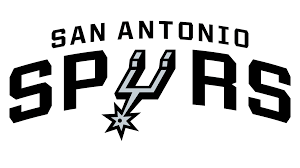

San Antonio Spurs (literalmente, en español, «Espuelas de San Antonio») es un equipo de baloncesto de la NBA con base en San Antonio, Texas. Juegan de local en el AT&T Center y utilizan indumentaria blanca y negra. Los Spurs son el único equipo procedente de la ABA capaz de ganar un anillo de campeón de la NBA, consiguiéndolo en cinco ocasiones.1 Los Spurs son la franquicia con mejor porcentaje de victorias de la historia de la liga, con un 61,7 %, y con el título de 2014 son el equipo con mejor porcentaje de victorias en las Finales de la NBA. Desde que llegaron a la NBA en 1976, San Antonio solo se ha perdido los playoffs en cuatro ocasiones.
La 2016-17 comenzaría con la adquisición del All Star español Pau Gasol, quien llega para cubrir el lugar que deja el retiro de Tim Duncan, también los Spurs nuevamente sacan petróleo del draft y adquieren al base Dejounte Murray y fichan a una elección pasada del draft al letón Dāvis Bertāns, además refuerzan su juego interior con el veterano ex All Star David Lee y con Dewayne Dedmon proveniente de Orlando Magic. Los Spurs nuevamente tienen un gran año con marca de 61-21, terminando segundos en la temporada regular a 5 juegos de los Golden State Warriors quienes habían golpeado el mercado de verano haciéndose de los servicios de la super estrella Kevin Durant.
En sus 42 temporadas en la NBA los Spurs han logrado 22 títulos de división, siendo el equipo que más títulos de división ha logrado en estos 42 años, seguido de los Lakers con veinte. Son el único equipo de la NBA con un récord empatado o mejor contra cualquier equipo activo en temporada regular.
 Indice
Indice